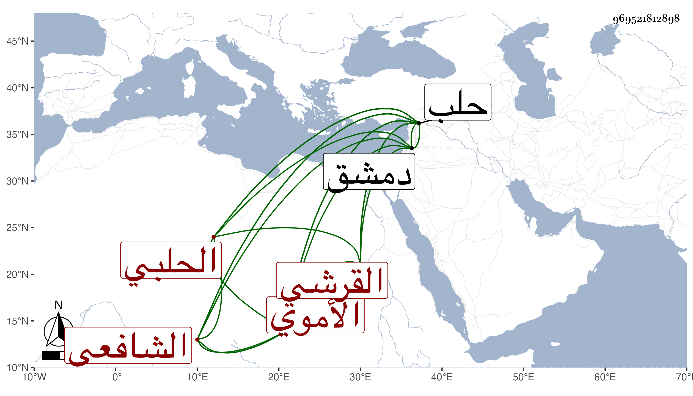

0902Sakhawi.DawLamic.ITO20230111-ara1.EIS1600.969521812898
Biography ID: 969521812898
58
محمد بن أحمد بن عمر بن الضياء محمد بن عثمان بن عبيد الله بن عمر بن الشهيد أبي صالح عبد الرحيم بن عبد الرحمن بن الحسن بن عبد الرحمن بن طاهر بن محمد ابن محمد الشهاب أبو جعفر بن الشهاب أبي العباس بن أبي القسم القرشي الأموي الحلبي الشافعي ويعرف بابن العجمي . ولد في العشر الأول من ربيع الأول سنة خمس وسبعين وسبعمائة بحلب ونشأ بها فسمع على الشهاب بن المرحل والشرف أبي بكر الحراني وأبي حفص عمر بن ايدغمش وخليل بن محمود الشهابي وأبي جعفر الأندلسي والعز الحسيني وابن صديق في آخرين وبدمشق على عائشة ابنة ابن عبد الهادي وبالقاهرة على البلقينى وغيره ، وأجاز له الصلاح بن أبي عمر وجويرية الهكارية والحراوي وخلق ، وكان قد تفقه بالزين بن الكركى والشرف الداديخى ، وولى قضاء حلب عقب الفتنة في إمرة دمرداش فسار فيه أحسن سيرة ثم عزل نفسة بعد أربعة أشهر لكون نائبها طلب منه القرض من الأوقاف أو من مال الأيتام ولم ينفك عن النيابة عمن يليه وكذا باشر نظر عدة مدارس وتدريسها كمدرسة جده الشرفية والزجاجية والشمسية والظاهرية ، وحدث كتب عنه شيخنا وأورده في معجمه وقال أجاز لأولادي ثم سمعت عليه بحلب أشياء ذكرتها في فوائد الرحلة انتهى . وممن سمع منه من أصحابنا ابن فهد ومن شيوخنا الأبي مع ابن موسى في سنة خمس عشرة أجاز لي ، وكان من رؤوساء بلده وأصلائها لطيف المحاضرة حريصا على ملازمة البرهان الحلبي حتى أنه حج هو وإياه في سنة ثلاث عشرة ثم حج بمفرده بعد ذلك وكتب عن البرهان شرحه للبخاري وغيره من تصانيفه وسمع عليه غالب الكتب الستة ، ذا شكالة حسنة رأى الناس وتأدب بهم لكن مع الإمساك وحدة الخلق . مات في بكرة يوم الأربعاء منتصف رمضان سنة سبع وخمسين وصلى عليه بالجامع الكبير ودفن بالمدرسة الكاملية بالجبيل الصغير ، وهو في عقود المقريزي وبيض له رحمه الله وإيانا .
